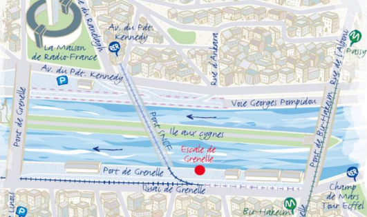

Map to Quai de Grenelle
Facing the Swans Island, you can enjoy the neighborhood with its shops, restaurants and movie theaters. You will appreciate the atmosphere and ambiance of a small village under the shades of the waterfront buildings and view on the Eiffel Tower.
Address
1, Quai de Grenelle, 75015 PARIS
Google Maps references
48.852738,2.285269 (opens Google Map)
Car access
Drive down the dock from the Grenelle Bridge, on Paris 15th district side. Drive in direction of the Eiffel Tower. The Grenelle dock is located after the SNCF (french railways) bridge. Parking limited to 40/50 spots.
Parking
Parking Beaugrenelle mall
19, rue Linois, 75015 PARIS
19, rue Linois, 75015 PARIS
Parking Kennedy / Radio France
1, avenue du Président Kennedy, 75016 PARIS
1, avenue du Président Kennedy, 75016 PARIS
Subway access
Line 6 - Bir Hakeim station
Train (RER) access
Line C - “Champ de Mars / Tour Eiffel” station
Bus access
Line 70 - Pont Grenelle - Place Fernand Forest stop
